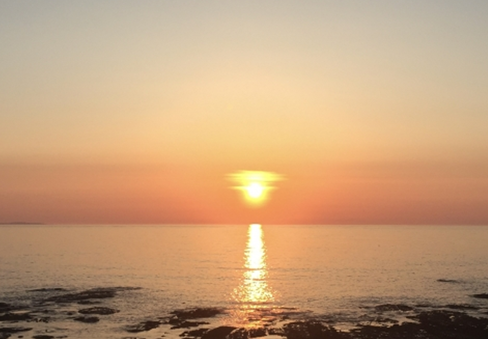
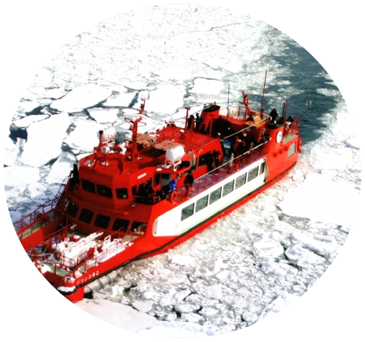
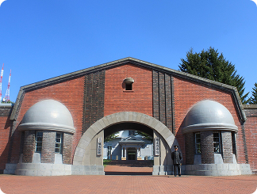
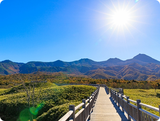
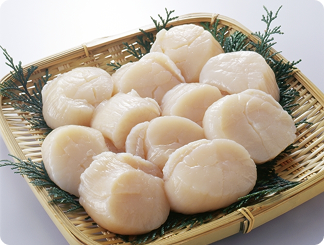
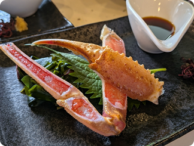

オホーツク地方
okhotsk



okhotsk
「試される大地」の別名を持つ北海道。冷涼な気候が育む四季折々の絶景（ラベンダー畑、紅葉、流氷）、漁場から直送される極上の海産物、そしてジンギスカンやラーメンなどのソウルフード。観光客を飽きさせない多様な魅力が凝縮されています。日本にいながらにして、まるで異国を旅しているかのような開放感と感動に出会える場所です。
アクセス情報
各エリア毎に、おすすめの観光スポットと食事を紹介します
okhotsk
北海道の北東部に広がるオホーツク地方は、雄大な自然と四季が織りなす絶景が魅力のエリアです。世界的にも珍しい流氷が沿岸を覆 う冬は、白銀の海が生まれる幻想的な季節。夏には澄んだ空と果てしなく続く草原、畑、湖が広がり、北海道らしいダイナミックな景観が訪れる人を迎えます。サロマ湖や知床、網走湖など豊かな水辺には多様な野生生物が息づき、自然体験、グルメ、歴史文化も多彩に楽しめる地域です。


北海道の歴史を伝える野外博物館。 明治期の監獄建築や生活の再現展示を通して、当時の暮らしや開拓の背景を深く知ることができる。 建築としての美しさも魅力です。

知床は、手つかずの自然が残る世界自然遺産です。 切り立つ海岸線や透き通る海、深い森がつくる雄大な景観と、 多様な野生動物が魅力。 静寂の中で、自然との距離を一番近くに感じられる場所です。

オホーツクの海で育つホタテは、きめ細かな身質と濃い甘みが特徴。 冷たく澄んだ海でゆっくり育つことで、旨みがぎゅっと閉じ込められ、 噛むほどに海の香りが広がる。刺身でも焼きでも、素材そのものの力が際立つ、北の逸品です。

オホーツクの海で獲れるカニは、身の締まりと濃厚な旨みが際立つ逸品。 冷たい海が育てた繊細な甘さと、口いっぱいに広がるコク。 茹でても焼いても、その存在感は揺るがない"北の贅沢"です。
各主要都市からのアクセス情報を記載しています
 東京から
東京から 大阪から
大阪から 名古屋から
名古屋から 福岡から
福岡から